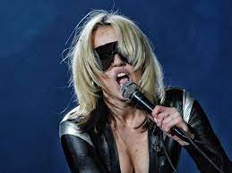
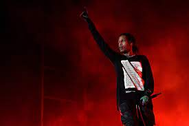
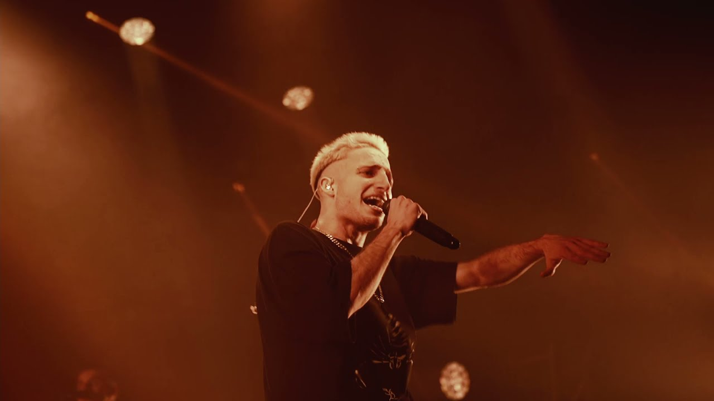
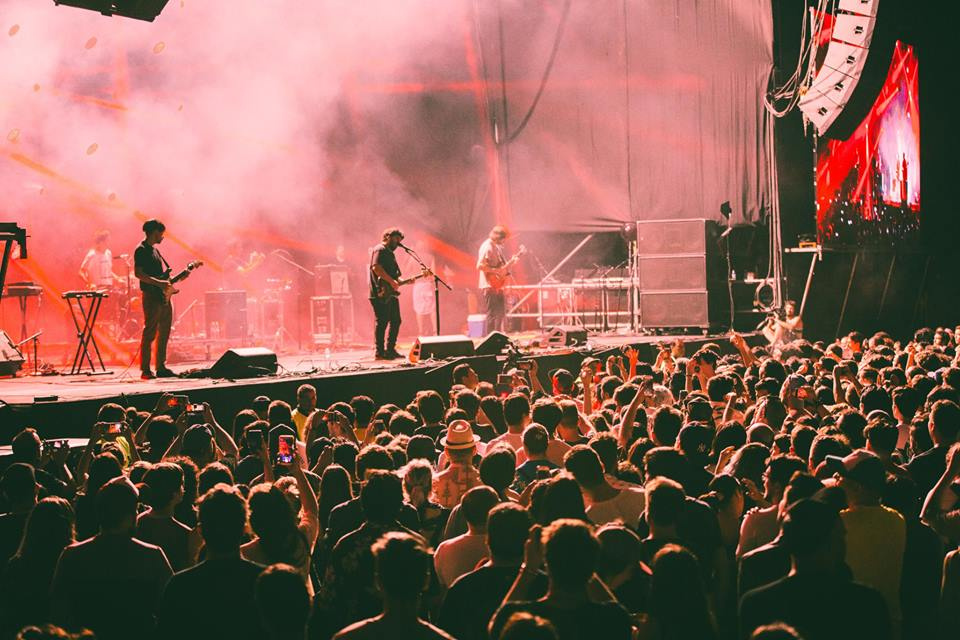
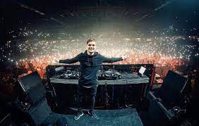

Artistas que van a estar participando
Miley Cyrus
Miley Cyrus es una cantante, compositora, actriz y productora discográfica estadounidense. Destacada por su voz ronca su música abarca una gama de estilos, desde pop y country pop hasta hip hop, experimental y rock.
A$AP Rocky
ASAP Rocky es un rapero, productor, actor, escritor y director estadounidense, miembro del grupo de hip hop A$AP Mob, del cual adaptó su apodo.
Wos
Wos es un rapero, freestyler, cantante y actor argentino. Surgió en la escena de las batallas de rap entre freestylers, y fue campeón en varias ocasiones de la competencia argentina El Quinto Escalón.
Él Mató a un Policía Motorizado
Él Mató a un Policía Motorizado es una banda de indie rock con origen en la ciudad de La Plata, Argentina. La banda combina el punk rock con el noise rock y el noise pop, logrando un sonido de guitarras fuertemente distorsionadas y en primer plano.
Martin Garrix
Martin Garrix, es un DJ y productor neerlandés fundador del sello STMPD RCRDS. Su éxito comenzó con el lanzamiento de la canción "Animals", el 17 de junio de 2013.
Duki
Duki es un rapero y compositor argentino. Empezó a ganar reconocimiento por sus apariciones en las batallas de rap, como la competencia El Quinto Escalón, la cual era una de las más conocidas de Argentina,